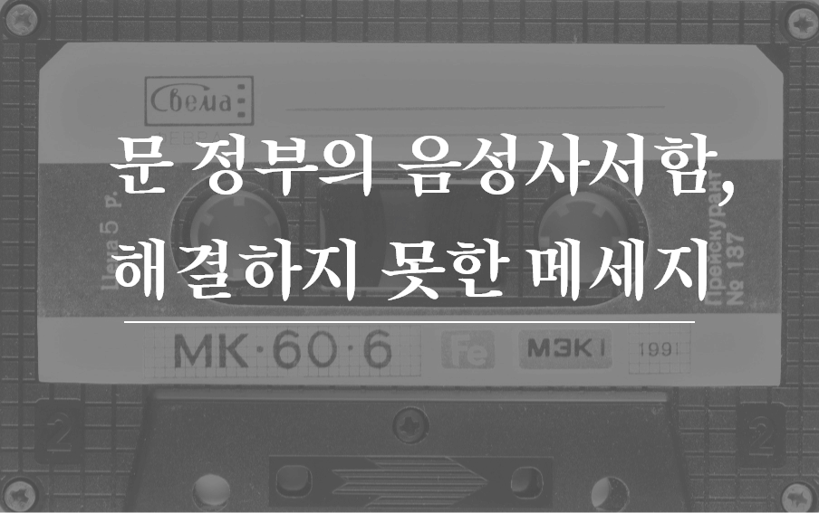

온고지신
(溫故知新,옛것을 익히고 그것을 미루어서 새것을 앎)
문재인 정부에서 해결하지 못한 과제를 파악하고
유권자들이 대선 후보를 선택하는데 도움을 줄 수 있도록 한다.
유권자들이 대선 후보를 선택하는데 도움을 줄 수 있도록 한다.
대선 후보들의 비호감도 역대 어느 대선보다 높은 상태. 사람들은 후보자 검증에 그 후보 국정 능력을 나타낼 수 있는 정책,
그 정책에 얼마나 공감하고 이해하고 있는지를 살피지 않음. 언론과 정치계에서 쏟아내는 네거티브에 휘말려 5년을 이끌어갈
대선 후보의 자질을 확인하는데 어려움을 겪고 있음.
그러면 후보의 공약만 공부하면 될까? 후보들의 공약의 필요성과 중요성을 파악하기 위해서는 그 이전의 우리 사회가 어떤 결핍을 겪었는지부터 알아야함.
국민들의 목소리를 제일 잘 담아낸 곳이 국민청원이라고 생각했고, 국민청원의 5년을 살펴본 후 대선 후보의 공약을 짚어보고자함.
프로젝트 ‘서퍼’는 국민 청원 도입 5주년을 맞아 국민 청원에 올라온 게시판을 분석해 문재인의 5년을 추적해보고자 한다. 5년 동안 올라왔던 청원을 범주화하여 국민들이 변화를 가장 원했던 분야는 무엇이었는지 분석하고 그 문제가 5년 동안 얼마나 변화했는지 알아본다. 5년 동안의 국민 청원 분석을 마무리한 후, 해결되지 못한 문제들을 위해 다음 타자가 내세운 공약이 있는지 살펴보며 끝맺는다.
그러면 후보의 공약만 공부하면 될까? 후보들의 공약의 필요성과 중요성을 파악하기 위해서는 그 이전의 우리 사회가 어떤 결핍을 겪었는지부터 알아야함.
국민들의 목소리를 제일 잘 담아낸 곳이 국민청원이라고 생각했고, 국민청원의 5년을 살펴본 후 대선 후보의 공약을 짚어보고자함.
프로젝트 ‘서퍼’는 국민 청원 도입 5주년을 맞아 국민 청원에 올라온 게시판을 분석해 문재인의 5년을 추적해보고자 한다. 5년 동안 올라왔던 청원을 범주화하여 국민들이 변화를 가장 원했던 분야는 무엇이었는지 분석하고 그 문제가 5년 동안 얼마나 변화했는지 알아본다. 5년 동안의 국민 청원 분석을 마무리한 후, 해결되지 못한 문제들을 위해 다음 타자가 내세운 공약이 있는지 살펴보며 끝맺는다.
"5년 동안의 목소리 그리고 응답"
국민청원의 17가지 카테고리 구성
2017-2021년 분야별 국민청원 동의 수 기준
국민청원 카테고리 구성에 대한 설명, 국민 청원 자체에 대한 설명 등 부연 텍스트 작성, 국민청원 카테고리 구성에 대한 설명,
국민청원 자체에 대한 설명 등 부연 텍스트 작성. 국민청원 카테고리 구성에 대한 설명, 국민청원 자체에 대한 설명 등 부연 텍스트 작성.
국민청원 카테고리 구성에 대한 설명, 국민청원 자체에 대한 설명 등 부연텍스트 작성.
5년간 통합 청원인 수, 게시글
청원인수, 게시글에 대한 부연설명 텍스트 보충 필요, 청원인원 수, 게시글에 대한 부연설명 텍스트 보증 필요, 청원인 수,
게시글에 대한 부연설명 테스트 보충 필요, 청원인원 수, 게시글에 대한 부연설명 텍스트 보충 필요, 청원인 수, 게시글에 대한
부연설명 텍스트 보충 필요

연도별 각 분야의 청원 수 변화
연도별 각 분야의 청원 수 변화에 대한 부연설명 텍스트 보충 필요, 연도별 각 분야의 청원 수 변화에 대한 부연설명 텍스트 보증 필요, 청원인 수,
게시글에 대한 부연설명 테스트 보충 필요, 연도별 각 분야의 청원 수 변화에 대한 부연설명 텍스트 보충 필요, 연도별 각 분야의 청원 수 변화에 대한
부연설명 텍스트 보충 필요
"그들이 전하는 메시지의 전문"
트랙1앞서 가장 많은 청원 수와 게시글 수를 기록했던 인권/성평등. 인권/성평등에 대해 많은 사람들이 목소리리를 내고 있다는 것은 파악
했지만 세부적인 내용을 파악하기 위해서는 그들이 남긴 메시지를 하나씩 읽어보는 작업이 필요했음. 따라서 미성년자 성범죄 문제가 가장
심각하다는 것을 알 수 있었고 미성년자 성범죄 처벌 기준 조정의 문제가 해결되지 않아 혹은 의견이 분분하다는 것을 파악함.
워드클라우드가 - 했다는 것을 제시하며 분류의 타당성 제시, 부연설명 및 데이터 분석 결과 나열. 워드 클라우드가 -했다는 것을 제시하여
분류의 타당성 제시, 부연설명 및 데이터 분석 결과 나열. 워드클라우드가 - 했다는 것을 제시하며 분류의 타당성 제시, 부연설명 및
데이터 분석 결과 나열. 워드클라우드가 - 했다는 것을 제시하며 분류의 타당성 제시, 부연설명 및 데이터 분석 결과 나열. 워드클라우드가
- 했다는 것을 제시하며 분류의 타당성 제시, 부연설명 및 데이터 분석 결과 나열. 워드클라우드가 - 했다는 것을 제시하며 분류의 타당성
제시, 부연설명 및 데이터 분석 결과 나열.